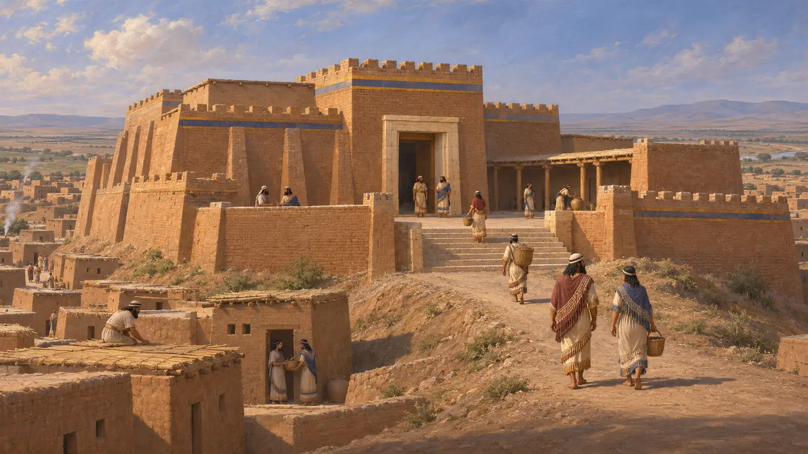
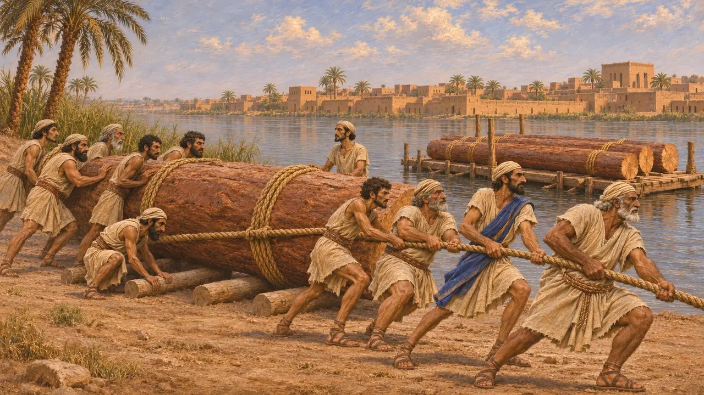
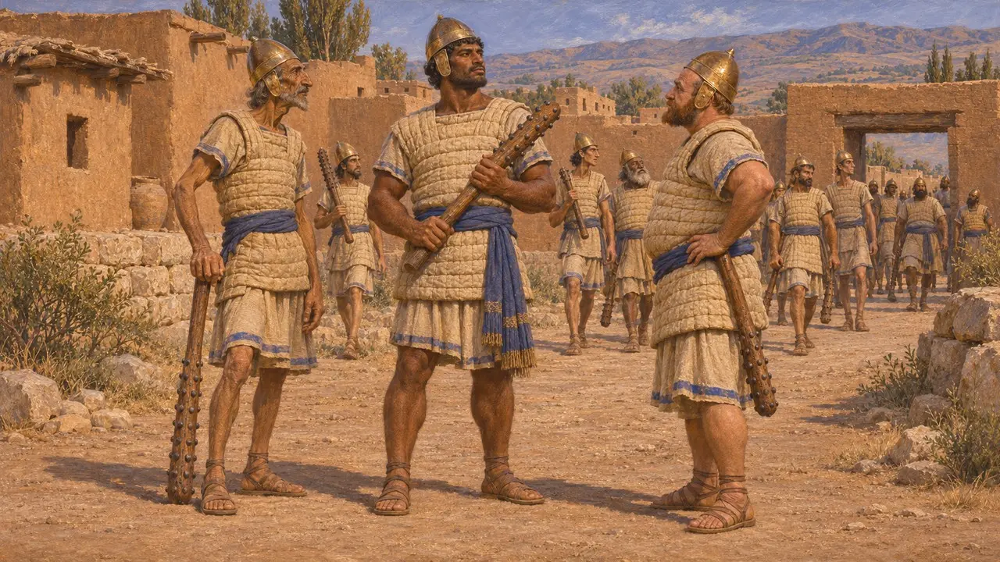
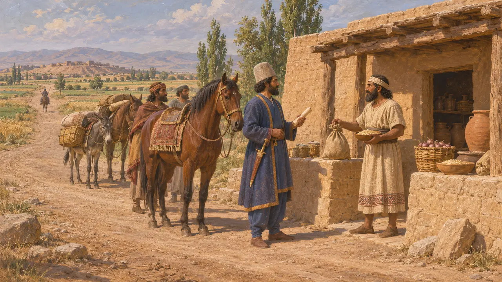
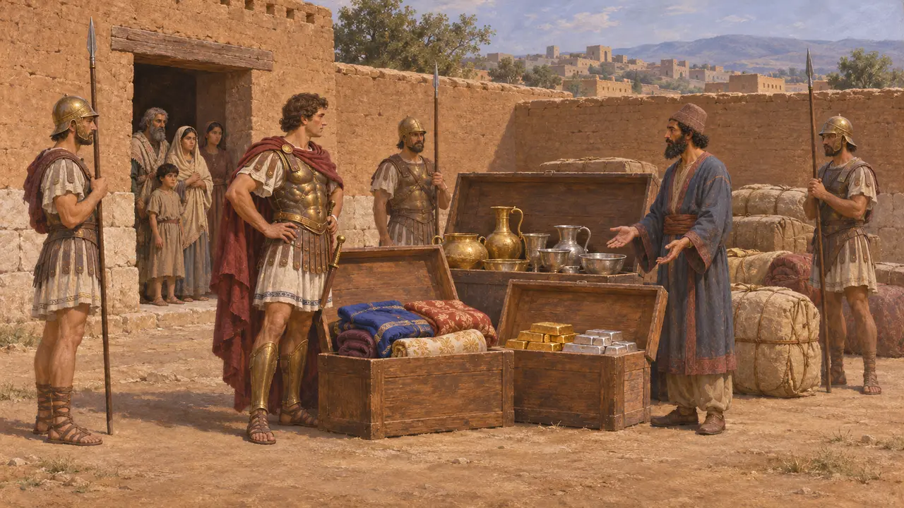
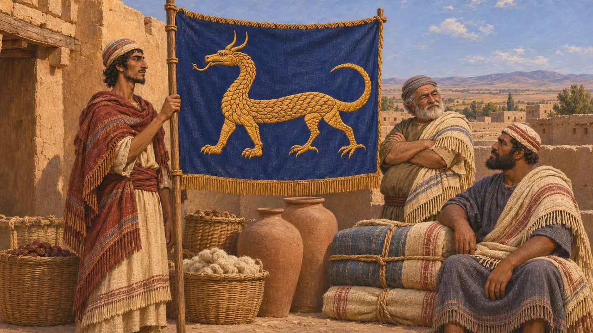

Die Assyrer von Arbela
Volk des alten assyrischen Kernlandes um Arbela unter persischer Herrschaft, 6.–5. Jahrhundert v. Chr.
Im Spiel: Level 3: Die Lüge
Arbela, das heutige Erbil im Nordirak, war eine der großen Städte Assyriens und überdauerte den Fall Ninives im Jahr 612 v. Chr. Unter den persischen Königen lag es in dem Land, das Dareios Athura nannte, an Routen, die Medien, Babylonien und den Westen verbanden. Seine Bewohner, wohl aramäischsprachige Erben Assyriens, dienten dem König als Soldaten, Arbeiter und Steuerzahler.
Im Spiel: Das Spiel stellt Arbela nur als Handelspartner dar, als „die Händler von Arbela“. Arbela war eine reale Stadt an den Straßen des Reiches, doch die Quellen sagen fast nichts über ihre Kaufleute, daher handelt es sich um eine Vereinfachung.

Ischtars Stadt vor den Persern
Zeitgenössisch belegtAssyrische Königsinschriften und Briefe zeigen Arbela als bedeutende Stadt und Sitz der Göttin Ischtar von Arbela, deren Tempel assyrische Könige erneuerten und ehrten. Als Meder und Babylonier 612 v. Chr. Ninive und Nimrud zerstörten, wurde Arbela nicht verlassen. Sein Zitadellenhügel ist fast ununterbrochen bewohnt worden und erhebt sich noch heute im Zentrum von Erbil.
J. Curtis, The Assyrian heartland in the period 612-539 BC, 2003

Athura in den Worten des Dareios
Zeitgenössisch belegtIn der Behistun-Inschrift zählte Dareios Athura, Assyrien, zu den Ländern, die ihm gehorchten. Während der Aufstände von 522–521 v. Chr. gab es einen sagartischen Rebellen, Citrantakhma, der sich auf die Abstammung vom medischen König Kyaxares berief. Dareios berichtet, er sei gefangen genommen, verstümmelt und dann in Arbela gepfählt worden. In seiner Gründungsurkunde von Susa sagt Dareios, das assyrische Volk habe Zedernholz vom Libanon bis nach Babylon für seinen Palast getragen.
DB §6; DB §33; DSf

Was griechische Autoren sahen
Antiker BerichtHerodot berichtet, die Assyrer im Heer des Xerxes hätten Bronzehelme und Leinenpanzer getragen und mit Eisen beschlagene Holzkeulen geführt; die Griechen nannten sie Syrer. Außerdem schreibt er, Babylon und das übrige Assyrien hätten dem König jährlich tausend Talente Silber und fünfhundert Knaben als Eunuchen geliefert. Xenophon kam auf seinem Marsch nach Norden im Jahr 401 v. Chr. an den verlassenen Ruinen von Nimrud und Ninive vorbei, die er als Larisa und Mespila kannte.
Herodotus 7.63; Herodotus 3.92; Xenophon, Anabasis 3.4

Wo Athura lag und welche Straßen hindurchführten
UmstrittenHistoriker streiten bis heute darüber, ob Athura nur das alte assyrische Kernland am Tigris meinte oder auch Syrien westlich des Euphrat. Griechische Autoren verwendeten den Namen Assyrien recht frei und schlossen oft Babylonien mit ein. Viele moderne Karten führen die Königsstraße über Arbela, doch Herodot nennt die Stadt an dieser Route nicht. Ein Reisepass, den Arshama, Satrap von Ägypten, im späten 5. Jahrhundert ausstellte, führt Arbela unter den Stationen für amtliche Reisende auf.
P. Briant, From Cyrus to Alexander, 2002; A. Kuhrt, The Persian Empire, 2007

Arbela und das Ende des Reiches
Antiker BerichtIm Jahr 331 kämpfte Dareios III. gegen Alexander bei Gaugamela, einem Dorf, das Arrian etwa 600 Stadien, rund 100 Kilometer, von Arbela entfernt verortet. Nach der Schlacht nahm Alexander Arbela ein und fand dort den Schatz und den Tross des persischen Königs. Arrian erklärt, die Schlacht sei nach Arbela benannt worden, weil Gaugamela nur ein kleines Dorf, Arbela aber eine bekannte Stadt war. So wurde der Name der alten assyrischen Stadt mit dem Untergang des Achämenidenreichs verknüpft.
Arrian, Anabasis 3.15; Arrian, Anabasis 6.11

Das Emblem neben dem Namen
UmstrittenDie Händler von Arbela tragen im Spiel Babylons Emblem, Marduks Schlangendrachen, da Arbela im alten assyrischen Kernland lag, das erst Babylon und dann Persien beherrschte. Arbelas eigene Göttin war Ischtar; ein Emblem der Stadt als Handelspartner ist nicht bekannt.
J. Black and A. Green, Gods, Demons and Symbols of Ancient Mesopotamia, 1992
Quellen
- Darius I, Behistun inscription (DB §6, §33) and Susa foundation charter (DSf)
- Herodotus 3.92, 7.63
- Arrian, Anabasis 3.15, 6.11
- P. Briant, From Cyrus to Alexander, 2002
- A. Kuhrt, The Persian Empire, 2007
- J. Curtis, The Assyrian heartland in the period 612-539 BC, 2003